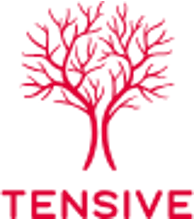
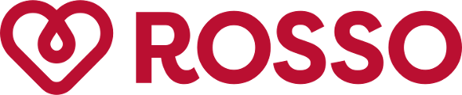

A dedicated team of students works hands-on on the projects that matter most, with an integrated, flexible approach built around each startup's specific needs.
October to the end of March, structured around your milestones.
One project manager plus four to five associates for each startup.
The program is offered to startups at no cost.
October to the end of March, with regular check-ins to set concrete goals and track progress.
Support on automating operational and commercial processes to boost efficiency and cut manual work.
Identifying target segments, validating through commercial proof-of-concepts and designing launch channels.
Investor mapping, support through deals and connections to our network of angels and VCs.
Creating and reviewing presentations and tools for communicating with partners and investors.
Lead generation and outreach to identify new opportunities for the sales process.
Every service above is tailor-made, shaped around your startup's stage, sector and specific needs, not delivered off-the-shelf.
An AI-native procurement platform that simplifies purchasing processes through intelligent automation, now scaling its commercial operations.
Backed by: Picus Capital, Shapers, Italian Founders Fund, Dutch Founders Fund
Lead qualification workflows with HubSpot and Clay.
Mapping of AI SDR platforms and their trade-offs.
Data quality and requirements to scale.

A startup developing biodegradable implants for post-mastectomy breast reconstruction, regenerating tissue naturally.
Backed by: Panakès Partners, EIC Fund, CDP, Recomec
Over 20 competitors analysed and mapped.
Independent assessment and alternative scenarios.
Commercialisation framework and expert interviews.
A deep-tech startup turning satellite imagery into intelligence: insights from geospatial data for insurance, energy, infrastructure and the environment.
Supported by: SpaceFounders, ESA BIC Nord France, Incubateur Télécom Paris
New industrial applications and adjacent markets.
High-potential customer segments and use cases.
Outreach and customer discovery in the insurance sector.

A HealthTech startup building digital infrastructure for blood and plasma donation.
Result: Closed a €3M Seed round led by 360 Capital, with CDP Venture Capital and Angelini Investments
Italian and international VCs, prioritised targets.
Comparable transactions and market multiples.
Early-stage startups and founders looking for hands-on strategic and operational support from an embedded team.
Six months, from October to the end of March, with regular check-ins to set concrete goals and track progress.
The program is offered to startups free of charge.
A dedicated team of one project manager plus four to five associates, built around your startup's specific needs.
As partners, mentors and judges, or by supporting and joining our events and network across the ecosystem.
Applications for the October cohort are reviewed on a rolling basis.
Apply to the program